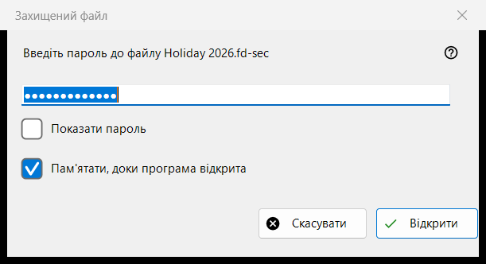
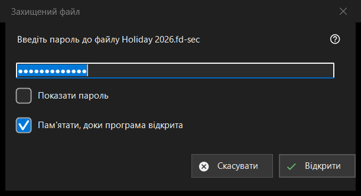

Захищений файл
Призначення
Запитує пароль захищеного контейнера - файлу .fd-sec, - коли він опиняється на екрані. Вікно з'являється, коли ви натискаєте Enter або клацаєте заблокований файл, і саме, коли ви зупиняєтеся на такому файлі; слайд-шоу пропускає захищені файли й рахує їх. Вміст показується з пам'яті: розшифрований на диск не записується. Лише сучасний переглядач.


Порядок дій
- Введіть пароль; він схований.
- Позначте «Пам'ятати, доки програма відкрита», якщо інші контейнери закрито тим самим паролем.
- Натисніть «Відкрити» (Enter).
- «Скасувати» (Esc) залишає файл закритим.
Елементи вікна
Пароль
Запит називає файл. «Показати пароль» спочатку вимкнено. Пароль береться точно так, як набрано, і перевіряється поза головним потоком, тому переглядач не зависає, поки триває повільне отримання ключа; він ніколи не записується ні в реєстр, ні у файл, ні в сховище Windows.
Пам'ятати, доки програма відкрита
За замовчуванням позначено. Пароль тримається в пам'яті до закриття програми й лише після того, як із ним справді відкрився контейнер; потім переглядач мовчки пробує його на наступних контейнерах і питає, лише якщо він не підійшов.
Відмова і порожній пароль
Після невдалої спроби вікно повертається з рядком «Не відкрилося: пароль може бути невірним, файл може не бути контейнером, або його змінили.» Ці випадки виглядають однаково навмисно: неправильний ключ і змінений байт розрізнити не можна. Пошкоджений або непідтримуваний контейнер отримує власне повідомлення й вікна пароля не викликає. Порожній пароль приймається, але перше натискання Enter показує «Порожній пароль - це не захист: такий файл лише прихований від побіжного погляду. Натисніть ще раз, щоб відкрити.», а друге відкриває файл.
Скасування
«Скасувати», Esc і кнопка закриття вікна - один шлях, він нічого не змінює. На місці файлу лишається напис «Потрібен пароль - натисніть Enter або клацніть файл», і поки відкрита ця тека, переглядач більше не питає пароль для нього. Enter або клацання по файлу питає знову.